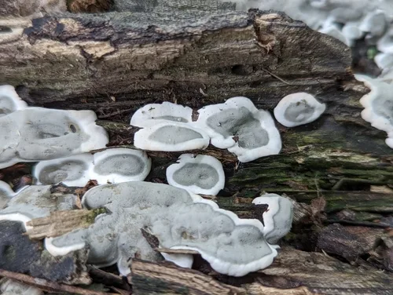
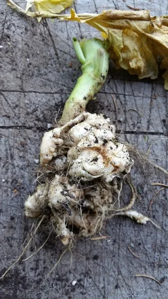
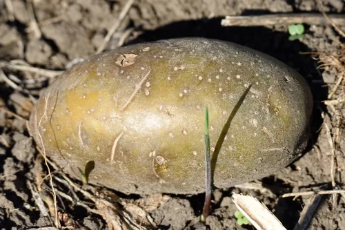
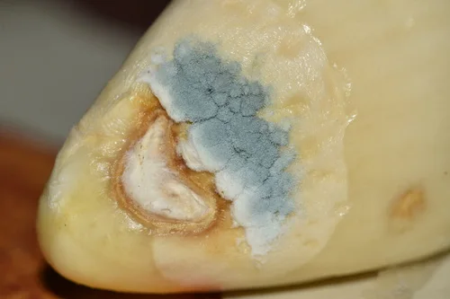

根的问题

根变软腐烂将盆从套盆里取出，看看底部是否积水。轻触可见的根，记录哪些仍有弹性，哪些轻碰就脱皮。

土壤表面出现真菌或蘑菇留意生长物仅在土面，还是也延伸到根颈。观察新叶是否仍然挺立。

根畸形查看根是沿盆壁打圈、碰到硬物后分叉，还是根组织本身出现结节。拍照时放一把尺作参照。

树基灰白色菌壳逐渐变成炭黑色平伏在根颈上的菌壳没有层架菌醒目，容易漏看。它的位置涉及树体支撑部位，即使树冠仍绿也需留意。

根颈出现黑色鞋带状菌索根部暗色菌索与草坪上零散蘑菇提供的线索不同。先追查附着物，区分活树受累与附近埋木被分解。

萎蔫的十字花科蔬菜长出棒状肿根菜床仍湿、甘蓝却萎蔫时，先查根再浇水。根系严重变形，即使有水也可能吸收不足。

葱蒜鳞茎基部长白色绒层和黑色细粒葱蒜成片黄化时，带鳞茎挖起一株仍在衰弱的植株。根与鳞茎相接的底部最值得检查。

马铃薯块茎表皮粘有黑色硬痂收获的马铃薯冲洗后仍可能像沾着土。逐个查看皮上黑痂，并与芽眼旁一冲即散的泥土对比。

马铃薯薯皮出现木栓状凹坑或隆起疮痂普通疮痂病的病斑长在薯皮内，可粗糙浅表、明显隆起或深凹。同一株结出的薯块外观也未必一致。

贮藏马铃薯薯皮出现银亮色斑片薯皮上的平滑斑块在湿润时闪银光，可能是银屑病。反光来自表皮改变，因此观察角度很重要。

蒜头外皮下的蒜瓣长出蓝绿色霉层一头蒜外表看似完整，外皮下却可能已有个别蒜瓣皱缩发霉。秋季分瓣播种前应先检查，尤其留意采收碰伤处。

吸收根本身长出成串小结蔬菜浇水后仍矮小，可在尚未枯死时挖一株检查。根结线虫会使细根膨大，午后高温时吸水更易跟不上。

针叶树桩和根部低处出现浅边菌架如果衰弱的针叶树有可能倒向步道或建筑，请在倒伏范围外记录位置，交由专业树艺师评估。

针叶树根旁长出黄边绒面莲座状菌体针叶树旁低矮的莲座状菌体可能连着地下木质根。年轻的绒盖菌体常有鲜黄生长边，中心颜色较深、表面似绒。

植株周围的覆盖物上冒出黄色泡沫状物雨后，地面可能一夜间多出一团鲜黄色、像泡沫的东西。先看它附着在哪里，再判断根部是否出了问题。